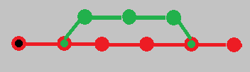
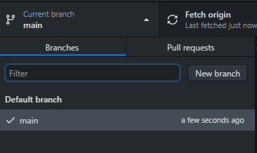
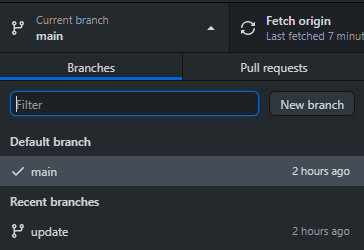
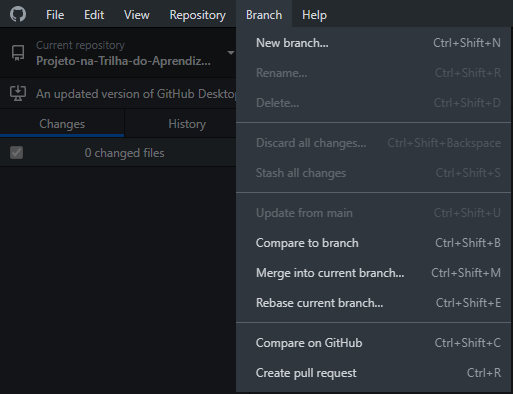
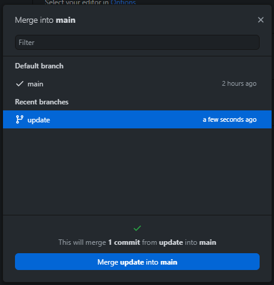
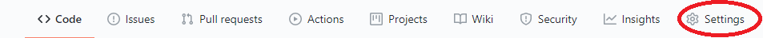
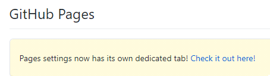
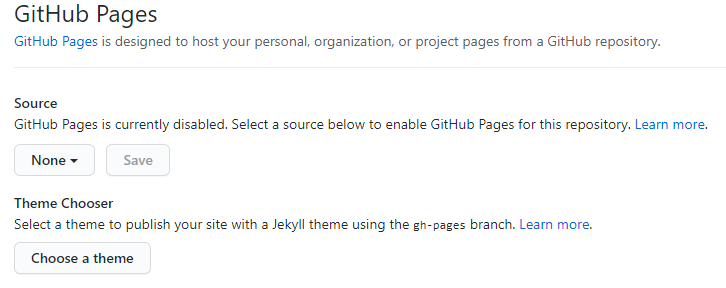
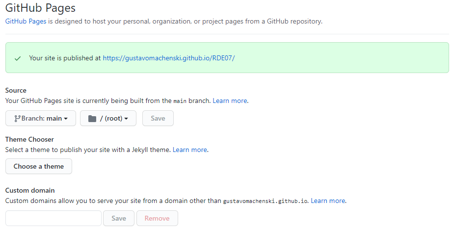

As branches são ramificações de um projeto ou documento, o seu principal objetivo é o desenvolvimento pararelo de novas funcionalidades, corregão de problemas e alterações no código, sem que o código principal seja afetado durante o processo, mantendo seu funcionamento.
As branches se dividem em dois grupos:
Branche Main
Que é o documento principal.
Branch Secundária
Que são os documentos secundarios de um projeto

A criação de branches sera feita entro do GitHub Desktop, no mesmo quando criamos um repositorio ele sera iniciado com a branche main

Para criarmos uma nova branch clicamos em New Branch, colocamos seu nome e comfirmamos sua criação. Apos ser criada ela vai aparecer para ser usada no GitHub Desktop

A branch update é a branch secundaria criada a partir da branch main, o conteudo nela presente é o mesmo que esta na main, porem quando alterarmos esse conteudo na branch update ele não sera alterado na main, a alteração na main so ocorre quando fazemos um Merge.
Para fazermos o merge utilizaremos tambem o GitHub Desktop, atraves da seguinte forma.
Colocaremos na branch mian e clicaremos em "Branch" e depois em "Merge into current branch..."

Depois disso selecionaremos as duas branchs que queremos juntar e confirmamos a operação

Hospedagem
A hospedagem é a consolidação de um projeto, é nessa etapa que o seu site vai para algum servidor para ser exibo a qualquer usuario com acesso a internet.
No caso desta disciplina a hospedagem se dara atraves do GitHub Pages pois é gratuita.
Para fazer a hospedagem dos seus projetos você deve abrir o GitHub e escolher o repositorio a ser com o documento a ser publicado.
Dentro do repositorio você vai clicar em 'setings'.

E depois ira procurar por 'GitHub Pages' e clicar em 'Check it out here!'

Inicialmente estara assim, você deve troca none por main.

Apos você mudar deve clicar em 'save' e aguardar para que apareca a mensagem de comfirmação e a URL do seu site.

Apos todo esse processo seu site estara disponivel para uso atraves da URL em qualquer maquina que possua internet.